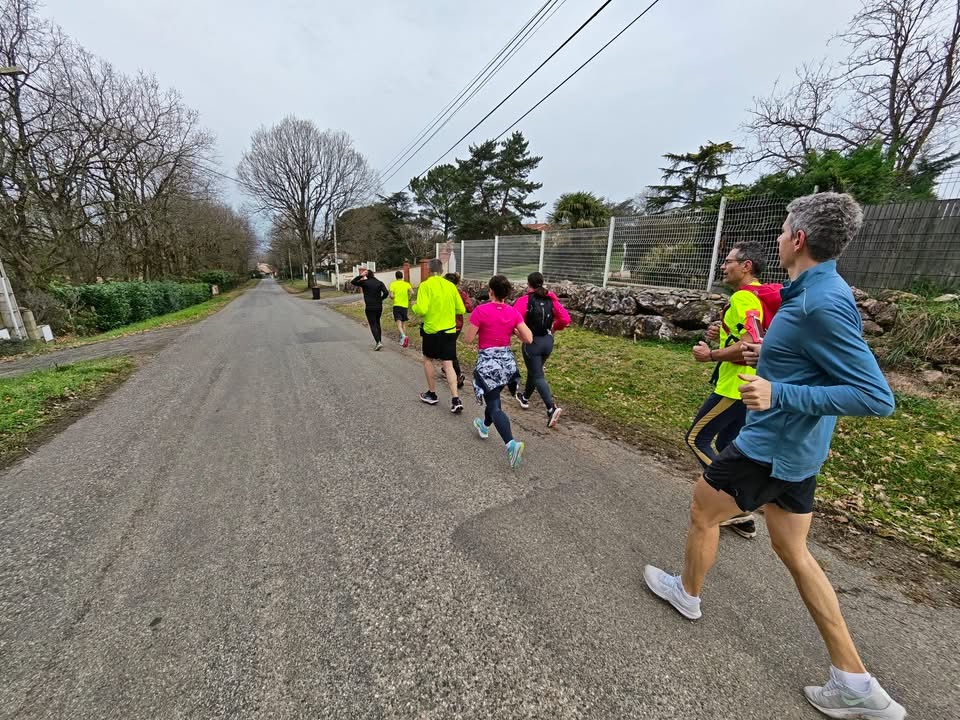
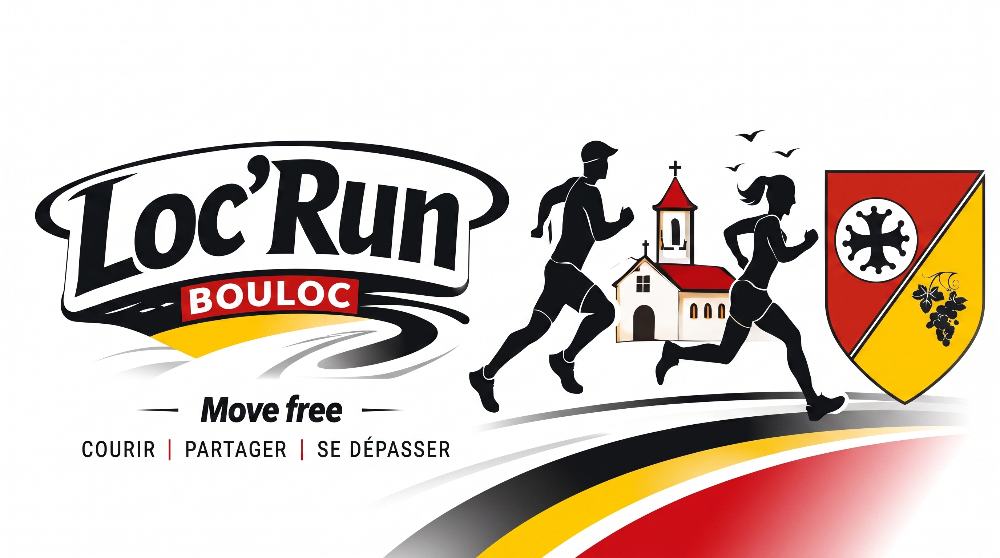
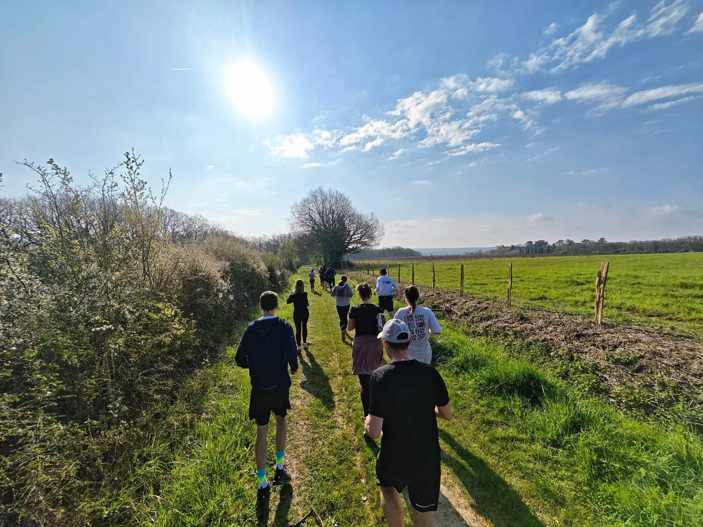
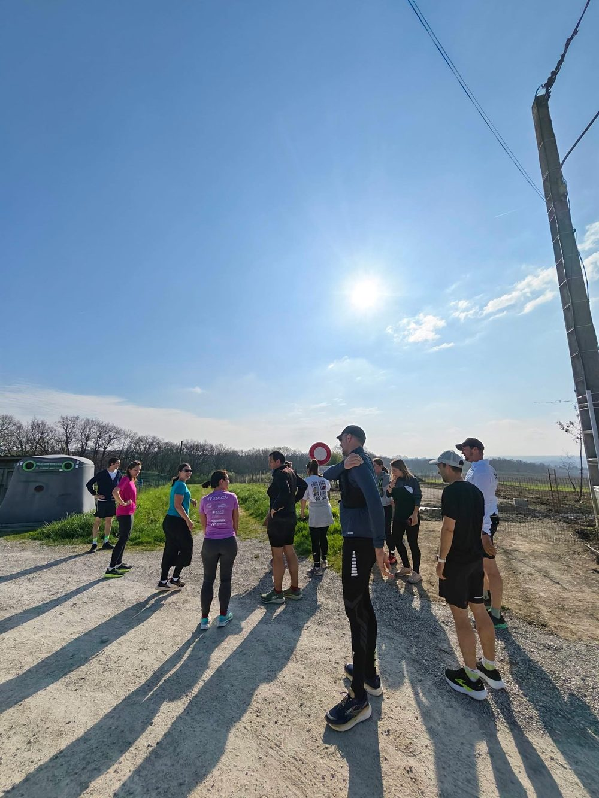
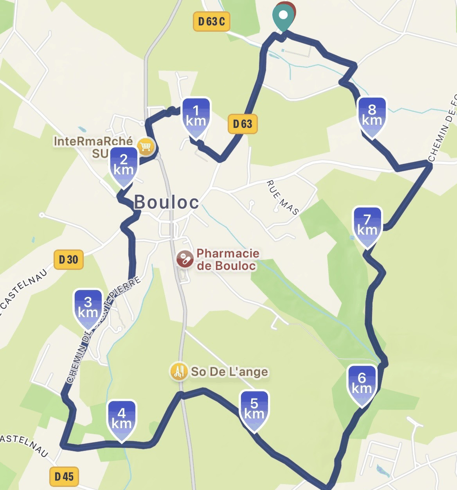
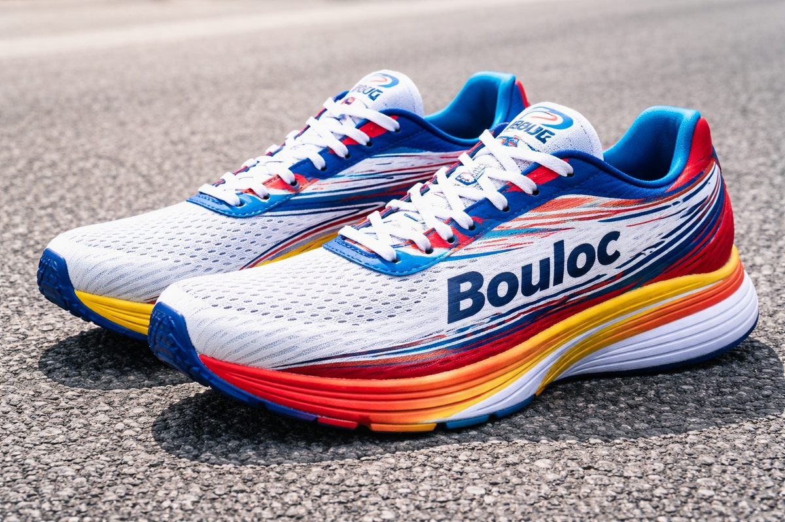

Courir ensemble,
aller plus loin
Association de course à pied à Bouloc.
Ouvert à tous, accessible à chacun.

NOS RENDEZ-VOUS
MARDI
19H00
DIMANCHE
09H30
Rendez-vous au stade de Bouloc. Tout changement est annoncé sur WhatsApp.
Une énergie à partager
Implantée au cœur de Bouloc, Loc'Run est née de la volonté de partager le plaisir de courir ensemble. Elle rassemble des habitants de tous horizons autour d'une pratique accessible, conviviale et porteuse de bien-être.

Partager des moments conviviaux
Progresser à son rythme
LE NOM
La légende de Loc
LOC
BOUN LOC
BOULOC
LOC'RUN
En des temps anciens, Bouloc portait le nom de Loc. Ses habitants traçaient à la force des jambes de longs chemins sinueux reliant collines, bois et coteaux : les tours de Loc. La renommée de ces chemins dépassa le comté ; séduits par les parcours et par l'accueil, les voyageurs surnommèrent le village « Boun Loc » — le bon lieu. Le nom devint Bouloc.
En 2026, Loc'Run reprend le fil, avec pour devise Move free.
« Courir rendait libre. »
Les sorties de running
MARDI
19H00
Stade de Bouloc
Sortie du soir, environ 1 h, plusieurs groupes d'allure.
DIMANCHE
09H30
Stade de Bouloc
Sortie plus longue, à la découverte des chemins autour du village.
QUAND TU VEUX
Sorties libres
Hors créneaux, propose ta sortie sur WhatsApp et ceux qui sont dispos se retrouvent.
Les parcours
Quatre ou cinq parcours classiques autour du village, sur route et sur chemins, qu'on refait régulièrement. Et de temps en temps, une variante pour changer un peu.
- Premières sorties libres et gratuites
- Des groupes par allure : personne ne rentre seul.
- Rendez-vous au stade de Bouloc ; tout changement est annoncé sur WhatsApp.

Agenda
Adhérer
- 1Tu remplis le formulaire sur HelloAsso.
- 2Tu acceptes les documents « Autorisation droit à l'image » et « Décharge pratique sportive ».
- 3Tu règles ta cotisation en ligne, en deux minutes.
- 4On se retrouve dimanche 9h30 ou mardi 19h, au lieu annoncé sur WhatsApp.

CE QUE ÇA T'APPORTE
- Rejoindre le groupe et ses sorties
- Le plaisir de courir ensemble
- De belles rencontres humaines
- Les événements de l'année
- Le maillot du club
- Le soutien à une association locale
Pas besoin d'être licencié. Débutants bienvenus.
Plus d'infos, suivez-nous !
Partenaires et soutiens
Ceux qui nousdonnent un coup de main
Devenir partenaire
Aidez-nous à financer nos maillots de running.
Devenir partenaireVotre soutien fait la différence, même un petit don compte.
- Soutenez une association sportive locale et ses valeurs de partage, dépassement et convivialité
- Gagnez en visibilité : votre logo sur nos maillots lors des sorties, courses et événements
- Associez votre image à une dynamique positive et engagée